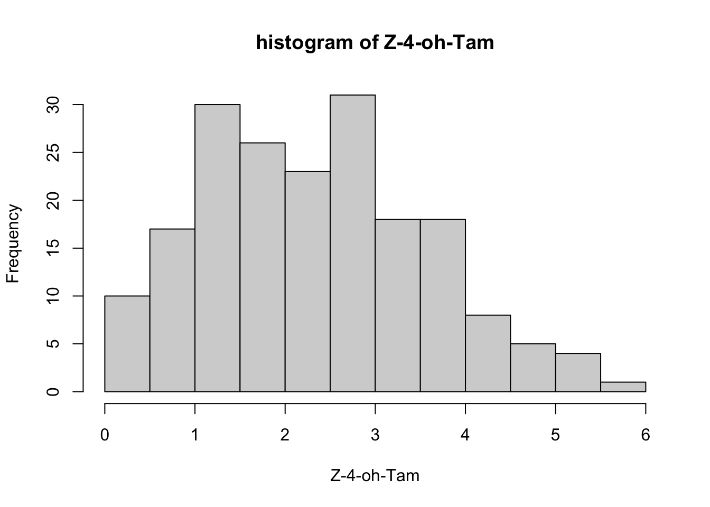

Chapter 4 GWAS Case Study-Data Preparation
Here we introduce a hands-on practice of a case study on genome-wide association study with continuous traits. This breast cancer study of Polish Caucasion cohort aims to identify new CYP2D6 DNA variants associated with impaired metabolism of tamoxifen toward endoxifen, and can be used to predicting efficacy of tamoxifen treatment. In this chapter, we will use their preprocessed 192 DNA samples selected from the Polish Caucasian cohort to show you a typical GWAS workflow. The selection of these 192 samples is based on ratio of the sum of two tamoxifen active metabolite ((Z)-endoxifen and (Z)-4-OH-Tam) plasma concentrations to the sum of the concentrations of tamoxifen and the remaining measured compounds. As a result, 96 samples were from patients with the highest ratio, and 96 were from those with the lowest ratio. Please refer to the following paper if you are interested in details of this data.
Reference paper: Hennig EE, Piatkowska M, Goryca K, Pospiech E, Paziewska A, Karczmarski J, Kluska A, Brewczynska E, Ostrowski J “Non-CYP2D6 variants selected by GWAS improved the prediction of impaired tamoxifen metabolism in breast cancer patients.” J Clin Med. 2019 Aug; 8(8): 1087. doi: 10.3390/jcm8081087
Important: Raw Whole Genome Sequencing data can be very large, more than 1Gb. We will show you the codes about how to download and preprocess the raw genotype data from start. But to run the analysis on laptop with limited memory, we provide the subsetted genotype data with only the first 1000 SNPs for you to practice.
4.1 Environment setting and packages
Before we can run any analysis, we need to set the working path in both R and bash and install the necessary R packages. To setup the working directory, make sure you run the following codes in R.
# change the path below to where you saved "cshl_gwas" folder
## run in R Terminal
mydir="/path/to/cshl_gwas/Data/case_data"
cd $mydirThe packages we will use in this chapter include: data.table, GEOquery (from Biocondector), GenABEL, qqman, png and QCGWAS. You will need to install these packages by yourself in R. The codes to install these packages are list below and are commented out with #.
# R codes- run in R Console
#install.packages("data.table")
#install.packages("qqman")
#install.packages("png")
#install.packages("QCGWAS")
#if (!require("BiocManager", quietly = TRUE))
# install.packages("BiocManager")
#BiocManager::install("GEOquery")After installation, the list of packages are loaded with library() function.
The following code might generate multiple message when loading the packages, such as “The following objects are masked from XXX”, which is normal. You can ignore them.
4.2 Accessing data
4.2.1 Data availability
Important: Genotype data is too large to be uploaded to GitHub so you can’t run codes in this section directly without the data. You can follow the codes below to try download them on your own computer if you have enough storage. We will just load from our downloaded data here.
The data for the study GSE129162 can be downloaded from NCBI data warehouse website. The link is https://www.ncbi.nlm.nih.gov/geo/query/acc.cgi?acc=GSE129162
The following code can download the pheonotype and genotype data.
Phenotype data:
GSE129162_series_matrix.txt.gz can be downloaded using this link. You can also download by running the following bash code if you have the exact url of the download files.wget command is followed by the files address, meaning that we want to download the data located in this address. Then we will unzip the file using gunzip command.
The codes here are commented out, as we already have this file downloaded for you. We will read in the data from the central folder. (If you want to try them, you can remove the # before system() command.The this data will be downloaded again.)
# bash codes- run in terminal
# data_path=/path/to/cshl_gwas/Data/case_data
# wget ftp://ftp.ncbi.nlm.nih.gov/geo/series/GSE129nnn/GSE129162/matrix/GSE129162_series_matrix.txt.gz -P $data_path
# gunzip $data_path/*gz #this code replaces the .gz file with an uncompressed fileThe platform data GPL16104-1240.txt is used for genotype annotation and can be downloaded from link https://www.ncbi.nlm.nih.gov/geo/query/acc.cgi?acc=GPL16104.
Genotype data:
GSE129162_Plate_1_Full_Data_Table.txt.gz(96 samples) is downloaded from this link
GSE129162_Plate_2_Full_Data_Table.txt.gz(96 samples) is downloaded from this link
You don’t need to download these genotype data files to your account. They are extremely large and will take long time to finish. We have already downloaded them for you.
The following code is what we used to download and unzip the genotype data. You can try practice wget command using some small data on your own computer.
# bash codes- run in terminal
# data_path=/path/to/cshl_gwas/Data/case_data
# wget https://ftp.ncbi.nlm.nih.gov/geo/series/GSE129nnn/GSE129162/suppl/GSE129162%5FPlate%5F1%5FFull%5FData%5FTable%2Etxt%2Egz -P $data_path
# wget https://ftp.ncbi.nlm.nih.gov/geo/series/GSE129nnn/GSE129162/suppl/GSE129162%5FPlate%5F2%5FFull%5FData%5FTable%2Etxt%2Egz -P $data_path
# gunzip $data_path/*gz4.2.2 Data files documentation
Below is a brief summary of the data information we need and their location in file. You can view the phenotype data by directly opening the file in data folder. But the platform and genotype data is too large to load here (genotype data is 8.2GB each, and platform data is 85.2MB). They are saved at our central folder to save space, and we will read these data from there when we start analysis.
- GSE129162_series_matrix.txt (phenotype data)
- Each column represents one sample. The first 96 samples match the genotype data in Plate 1, and the last 96 samples are on Plate 2.
- Row 42 is sample ID, eg. “3TX”, “23TX”, “41TX”
- Row 53-66 are phenotype data on 14 different metabolites
- Row 66 is z-endoxifen ratio(or metabolite ratio (MR)), which we’ll use in our analysis
- This data don’t have covariates information
- GPL16104-1240.txt (SNP information)
- Row 6 is the start of SNP information
- Col 1 is SNP ID
- Col 2 is chromosome
- Col 3 is physical position
- Col 4 is NCBI SNP accession
- GSE129162_Plate_1_Full_Data_Table.txt
GSE129162_Plate_2_Full_Data_Table.txt
(genotype, saved at our central folder “/anvil/projects/x-tra220018/2023/datasets/GWAS_data/” because of the large size.)- Row 1 is header, this genotype data contains much more information that we need. We’ll clean it first in ‘5. Prepare PLINK data’
- Col 1 is SNP ID
- Statistical quality control procedures were already performed by original paper
- sampleID.txt (Sample ID)
- Note: sample ID of genotype data and phenotype data are in the same order
You can open the phenotype data to check the file format directly, but the genotype data will be too large to upload to GitHub. You can download to your laptop if there’s enough storage.
We have subsetted only 1000 SNPs from the raw genotype data. The subsetted data are saved as GSE129162_1k_geno1.txt and GSE129162_1k_geno2.txt. We will directly use these subsetted data for following analysis.
Let’s first use head to print only the first several lines of the data and show you the file format.
## Index Name Address Chr Position GenTrain Score Frac A Frac C Frac G Frac T 3TX.GType 3TX.Score 3TX.Theta 3TX.R 23TX.GType 23TX.Score 23TX.Theta 23TX.R 41TX.GType 41TX.Score 41TX.Theta 41TX.R 54TX.GType 54TX.Score 54TX.Theta 54TX.R 76TX.GType 76TX.Score 76TX.Theta 76TX.R 94TX.GType 94TX.Score 94TX.Theta 94TX.R 109TX.GType 109TX.Score 109TX.Theta 109TX.R 130TX.GType 130TX.Score 130TX.Theta 130TX.R 5TX.GType 5TX.Score 5TX.Theta 5TX.R 24TX.GType 24TX.Score 24TX.Theta 24TX.R 42TX.GType 42TX.Score 42TX.Theta 42TX.R 56TX.GType 56TX.Score 56TX.Theta 56TX.R 80TX.GType 80TX.Score 80TX.Theta 80TX.R 95TX.GType 95TX.Score 95TX.Theta 95TX.R 110TX.GType 110TX.Score 110TX.Theta 110TX.R 131TX.GType 131TX.Score 131TX.Theta 131TX.R 8TX.GType 8TX.Score 8TX.Theta 8TX.R 26TX.GType 26TX.Score 26TX.Theta 26TX.R 43TX.GType 43TX.Score 43TX.Theta 43TX.R 57TX.GType 57TX.Score 57TX.Theta 57TX.R 81TX.GType 81TX.Score 81TX.Theta 81TX.R 96TX.GType 96TX.Score 96TX.Theta 96TX.R 111TX.GType 111TX.Score 111TX.Theta 111TX.R 132TX.GType 132TX.Score 132TX.Theta 132TX.R 10TX.GType 10TX.Score 10TX.Theta 10TX.R 28TX.GType 28TX.Score 28TX.Theta 28TX.R 44TX.GType 44TX.Score 44TX.Theta 44TX.R 58TX.GType 58TX.Score 58TX.Theta 58TX.R 82TX.GType 82TX.Score 82TX.Theta 82TX.R 97TX.GType 97TX.Score 97TX.Theta 97TX.R 112TX.GType 112TX.Score 112TX.Theta 112TX.R 134TX.GType 134TX.Score 134TX.Theta 134TX.R 11TX.GType 11TX.Score 11TX.Theta 11TX.R 30TX.GType 30TX.Score 30TX.Theta 30TX.R 45TX.GType 45TX.Score 45TX.Theta 45TX.R 59TX.GType 59TX.Score 59TX.Theta 59TX.R 84TX.GType 84TX.Score 84TX.Theta 84TX.R 100TX.GType 100TX.Score 100TX.Theta 100TX.R 113TX.GType 113TX.Score 113TX.Theta 113TX.R 135TX.GType 135TX.Score 135TX.Theta 135TX.R 12TX.GType 12TX.Score 12TX.Theta 12TX.R 31TX.GType 31TX.Score 31TX.Theta 31TX.R 47TX.GType 47TX.Score 47TX.Theta 47TX.R 60TX.GType 60TX.Score 60TX.Theta 60TX.R 85TX.GType 85TX.Score 85TX.Theta 85TX.R 101TX.GType 101TX.Score 101TX.Theta 101TX.R 119TX.GType 119TX.Score 119TX.Theta 119TX.R 137TX.GType 137TX.Score 137TX.Theta 137TX.R 13TX.GType 13TX.Score 13TX.Theta 13TX.R 33TX.GType 33TX.Score 33TX.Theta 33TX.R 48TX.GType 48TX.Score 48TX.Theta 48TX.R 62TX.GType 62TX.Score 62TX.Theta 62TX.R 86TX.GType 86TX.Score 86TX.Theta 86TX.R 102TX.GType 102TX.Score 102TX.Theta 102TX.R 120TX.GType 120TX.Score 120TX.Theta 120TX.R 138TX.GType 138TX.Score 138TX.Theta 138TX.R 14TX.GType 14TX.Score 14TX.Theta 14TX.R 34TX.GType 34TX.Score 34TX.Theta 34TX.R 49TX.GType 49TX.Score 49TX.Theta 49TX.R 64TX.GType 64TX.Score 64TX.Theta 64TX.R 87TX.GType 87TX.Score 87TX.Theta 87TX.R 103TX.GType 103TX.Score 103TX.Theta 103TX.R 123TX.GType 123TX.Score 123TX.Theta 123TX.R 140TX.GType 140TX.Score 140TX.Theta 140TX.R 15TX.GType 15TX.Score 15TX.Theta 15TX.R 36TX.GType 36TX.Score 36TX.Theta 36TX.R 50TX.GType 50TX.Score 50TX.Theta 50TX.R 66TX.GType 66TX.Score 66TX.Theta 66TX.R 88TX.GType 88TX.Score 88TX.Theta 88TX.R 104TX.GType 104TX.Score 104TX.Theta 104TX.R 124TX.GType 124TX.Score 124TX.Theta 124TX.R 141TX.GType 141TX.Score 141TX.Theta 141TX.R 18TX.GType 18TX.Score 18TX.Theta 18TX.R 38TX.GType 38TX.Score 38TX.Theta 38TX.R 51TX.GType 51TX.Score 51TX.Theta 51TX.R 70TX.GType 70TX.Score 70TX.Theta 70TX.R 91TX.GType 91TX.Score 91TX.Theta 91TX.R 105TX.GType 105TX.Score 105TX.Theta 105TX.R 126TX.GType 126TX.Score 126TX.Theta 126TX.R 143TX.GType 143TX.Score 143TX.Theta 143TX.R 20TX.GType 20TX.Score 20TX.Theta 20TX.R 39TX.GType 39TX.Score 39TX.Theta 39TX.R 52TX.GType 52TX.Score 52TX.Theta 52TX.R 71TX.GType 71TX.Score 71TX.Theta 71TX.R 92TX.GType 92TX.Score 92TX.Theta 92TX.R 107TX.GType 107TX.Score 107TX.Theta 107TX.R 127TX.GType 127TX.Score 127TX.Theta 127TX.R 144TX.GType 144TX.Score 144TX.Theta 144TX.R 21TX.GType 21TX.Score 21TX.Theta 21TX.R 40TX.GType 40TX.Score 40TX.Theta 40TX.R 53TX.GType 53TX.Score 53TX.Theta 53TX.R 72TX.GType 72TX.Score 72TX.Theta 72TX.R 93TX.GType 93TX.Score 93TX.Theta 93TX.R 108TX.GType 108TX.Score 108TX.Theta 108TX.R 128TX.GType 128TX.Score 128TX.Theta 128TX.R 149TX.GType 149TX.Score 149TX.Theta 149TX.R
## 1 rs2661837 59608986 6 160790174 0.9184957 0.2704918 0.204918 0.147541 0.3770492 AA 0.5307649 0.008821869 0.8875614 AA 0.5307649 0.004302552 0.789067 AA 0.5307649 0.0009787768 0.8586947 AA 0.5307649 0 0.8736661 AA 0.5307649 0 0.8482536 AA 0.5307649 0.0005487994 0.8785542 AA 0.5307649 0.005057058 0.864375 AA 0.5307649 0.005132833 0.8686453 AA 0.5307649 0 0.8767484 AA 0.5307649 0.02140945 0.9136057 AA 0.5307649 0.01904788 0.8284584 AA 0.5307649 0.0004573656 0.8286589 AA 0.5307649 0.005780901 0.8757555 AA 0.5307649 0 0.8813874 AA 0.5307649 0 0.8424288 AA 0.5307649 0 0.7390546 AA 0.5307649 0 0.9083221 AA 0.5307649 0.001534978 0.9625239 AA 0.5307649 0 0.8857813 AA 0.5307649 0.00595596 0.9236761 AA 0.5307649 0.01284935 0.844082 AA 0.5307649 0 0.8027009 AA 0.5307649 0.006743634 0.8488653 AA 0.5307649 0 0.7989991 AA 0.5307649 0.02454456 0.9109862 AA 0.5307649 0 0.8853042 AA 0.5307649 0 0.8708639 AA 0.5307649 0.007078197 0.8466141 AA 0.5307649 0 0.8055495 AA 0.5307649 0 0.8259746 AA 0.5307649 0.009037247 0.8377921 AA 0.5307649 0.009644038 0.7771008 AA 0.5307649 0.004977052 0.9286265 AA 0.5307649 0 0.8191994 AA 0.5307649 0 0.8361827 AA 0.5307649 0 0.8815122 AA 0.5307649 0 0.906369 AA 0.5307649 0 0.8790253 AA 0.5307649 0 0.8075159 AA 0.5307649 0.004478569 0.7776845 AA 0.5307649 0.00812393 1.054283 AA 0.5307649 0 0.9849927 AA 0.5307649 0 1.000727 AA 0.5307649 0.003880034 0.9562745 AA 0.5307649 0.003896269 0.8946571 AA 0.5307649 0 0.9378152 AA 0.5307649 0.001933285 0.8194149 AA 0.5307649 0 0.8283761 AA 0.5307649 0.003264024 0.8647493 AA 0.5307649 0.0007608423 0.8907053 AA 0.5307649 0.0009674665 0.9798262 AA 0.5307649 0.009114858 0.8938351 AA 0.5307649 0.003679669 0.8626351 AA 0.5307649 0.009026284 0.856285 AA 0.5307649 0 0.8542439 AA 0.5307649 0.01101972 0.8207533 AA 0.5307649 0.008917466 0.9453406 AA 0.5307649 0.01210755 0.9115667 AA 0.5307649 0 0.8424225 AA 0.5307649 0 0.8795742 AA 0.5307649 0 0.889537 AA 0.5307649 0 0.8563401 AA 0.5307649 0.01974745 0.87435 AA 0.5307649 0.004689173 0.8798686 AA 0.5307649 0 0.8932739 AA 0.5307649 0 0.9043528 AA 0.5307649 0 0.8281192 AA 0.5307649 0 0.8506914 AA 0.5307649 0.001669536 0.8482242 AA 0.5307649 0.009125629 0.8417856 AA 0.5307649 0 0.8414348 AA 0.5307649 0.01010706 0.8204561 AA 0.5307649 0 0.9428991 AA 0.5307649 0.004980553 0.9047675 AA 0.5307649 0 0.8529937 AA 0.5307649 0.00178936 0.8625727 AA 0.5307649 0 0.8376842 AA 0.5307649 0.000836632 0.8550883 AA 0.5307649 0 0.8180589 AA 0.5307649 0 0.8462505 AA 0.5307649 0 0.8995866 AA 0.5307649 0.01502675 0.9455797 AA 0.5307649 0 0.9397838 AA 0.5307649 0.02432778 0.954927 AA 0.5307649 0 0.8519539 AA 0.5307649 0 0.8212793 AA 0.5307649 0 0.8741056 AA 0.5307649 0 0.8466359 AA 0.5307649 0.02224802 0.9700703 AA 0.5307649 0.0023646 0.9193313 AA 0.5307649 0.008858708 0.8796223 AA 0.5307649 0 0.8536922 AA 0.5307649 0.007562425 0.8448886 AA 0.5307649 0.002468169 0.8238339 AA 0.5307649 0.008722084 0.8206755 NC 0 NA NA
## 2 rs17599091 22723170 4 100512919 0.9214322 0.3360656 0.1885246 0.1393443 0.3360656 BB 0.912639 1 0.7794374 BB 0.912639 1 0.7302647 BB 0.912639 1 0.7093137 BB 0.912639 1 0.7848499 BB 0.912639 1 0.7104745 BB 0.912639 1 0.7105295 BB 0.912639 0.9838951 0.7404255 BB 0.912639 0.9965864 0.6744733 BB 0.912639 0.9961912 0.8130928 BB 0.912639 0.9918755 0.7053344 BB 0.912639 1 0.781446 BB 0.912639 1 0.6858987 BB 0.912639 1 0.707101 BB 0.912639 1 0.6812564 BB 0.912639 0.9799449 0.7136893 BB 0.912639 0.9685298 0.6533777 BB 0.912639 1 0.7476017 BB 0.912639 0.994001 0.7005985 BB 0.912639 0.9895425 0.7104729 BB 0.912639 1 0.7367218 BB 0.912639 1 0.6662448 BB 0.912639 0.9798351 0.775735 BB 0.912639 0.9857764 0.6874716 BB 0.912639 0.9993283 0.6989886 BB 0.912639 1 0.7155004 BB 0.912639 1 0.6996114 BB 0.912639 1 0.7788225 AB 0.912639 0.5126581 0.8789718 BB 0.912639 0.9996191 0.7642295 BB 0.912639 0.9992164 0.7393318 BB 0.912639 1 0.7467736 AB 0.912639 0.5020118 0.7654631 BB 0.912639 0.9995052 0.8219552 BB 0.912639 1 0.7782356 BB 0.912639 1 0.7228932 BB 0.912639 1 0.7392787 BB 0.912639 0.9893503 0.7638509 BB 0.912639 1 0.7446367 BB 0.912639 0.9910279 0.6606835 BB 0.912639 0.9877959 0.7400993 BB 0.912639 0.9878162 0.9312968 BB 0.912639 0.99714 0.8092455 BB 0.912639 0.9967086 0.7012134 BB 0.912639 1 0.7402307 AB 0.912639 0.5378079 0.8767784 BB 0.912639 1 0.7412875 BB 0.912639 1 0.6642994 BB 0.912639 1 0.682972 BB 0.912639 0.9795766 0.767679 BB 0.912639 0.9878604 0.6468747 BB 0.912639 1 0.7013372 BB 0.912639 1 0.7644573 BB 0.912639 0.9901261 0.7128366 BB 0.912639 0.9976132 0.7424222 BB 0.912639 1 0.7057812 AB 0.912639 0.5276452 0.7657373 BB 0.912639 1 0.7256049 BB 0.912639 0.9923923 0.7006872 BB 0.912639 0.990753 0.6669228 BB 0.912639 1 0.7254286 BB 0.912639 1 0.7412325 BB 0.912639 0.9774454 0.8215737 BB 0.912639 1 0.7094045 BB 0.912639 0.9902368 0.75941 BB 0.912639 0.9878016 0.7513739 BB 0.912639 1 0.7192208 BB 0.912639 0.9999318 0.7556549 NC 0 NA NA AB 0.912639 0.5530401 0.8078632 BB 0.912639 1 0.6901007 BB 0.912639 1 0.6701491 BB 0.912639 0.9713188 0.6923268 BB 0.912639 0.994038 0.8934965 BB 0.912639 0.9944166 0.7379977 BB 0.912639 0.9987851 0.7758344 BB 0.912639 0.9881118 0.7431052 BB 0.912639 0.9911516 0.7213073 BB 0.912639 1 0.6183364 BB 0.912639 0.9972501 0.6855696 BB 0.912639 0.9986041 0.7456488 BB 0.912639 0.9967452 0.7073257 BB 0.912639 0.9919431 0.714431 BB 0.912639 1 0.7055821 BB 0.912639 1 0.7329943 BB 0.912639 0.984628 0.7268863 BB 0.912639 0.9993105 0.6670438 BB 0.912639 0.9771692 0.7168946 AB 0.912639 0.524509 0.7334743 BB 0.912639 1 0.720572 BB 0.912639 1 0.6640783 BB 0.912639 0.9820562 0.7841282 BB 0.912639 0.9681635 0.7194906 BB 0.912639 1 0.6973597 BB 0.912639 0.9689506 0.7540384 BB 0.912639 0.9894071 0.6509399 AB 0.912639 0.5748581 0.7970585
## 3 rs1492138 99703272 12 22030178 0.8141065 0.4344262 0.1803279 0.2213115 0.1639344 AA 0.8366347 0.0155831 1.486767 AA 0.8366347 0.01139608 1.45523 BB 0.8366347 0.9744331 1.221841 AB 0.8366347 0.4255435 1.966771 AA 0.8366347 0.02390762 1.510504 BB 0.8366347 0.983999 1.183172 AB 0.8366347 0.4472335 2.035755 AA 0.8366347 0.00729641 1.418926 AB 0.8366347 0.4148306 1.912822 BB 0.8366347 0.9542933 1.137165 AB 0.8366347 0.4159007 2.037065 AB 0.8366347 0.4468889 2.132677 BB 0.8366347 0.9976263 1.226691 AA 0.8366347 0 1.513907 BB 0.8366347 0.9965111 1.30037 AB 0.8366347 0.4211439 2.017136 AA 0.8366347 0 1.374981 AA 0.8366347 0.002693488 1.562682 AA 0.8366347 0.005519424 1.512518 AA 0.8366347 0.001476752 1.385142 AB 0.8366347 0.4031342 2.165268 AB 0.8366347 0.4252423 2.096977 AB 0.8366347 0.4232504 2.012156 AA 0.8366347 0.003376764 1.591835 AA 0.8366347 0.007099419 1.564587 BB 0.8366347 0.9709764 1.321027 AA 0.8366347 0.003099246 1.655463 AA 0.8366347 0.003674668 1.415602 AA 0.8366347 0.006876315 1.474013 AB 0.8366347 0.4136043 2.010224 AB 0.8366347 0.4087844 1.963807 AB 0.8366347 0.420595 2.026428 AB 0.8366347 0.4173257 1.926922 BB 0.8366347 0.9737976 1.324285 BB 0.8366347 0.9694954 1.21546 AB 0.8366347 0.4287727 1.966868 AA 0.8366347 0 1.35055 BB 0.8366347 0.9945471 1.167764 AA 0.8366347 0.004214888 1.466598 BB 0.8366347 0.9710065 1.371676 AB 0.8366347 0.3404096 1.849519 AB 0.8299909 0.3115434 1.803758 AA 0.8366347 0.001690709 1.447077 AA 0.8366347 0 1.495475 AB 0.8366347 0.451398 2.038282 AB 0.8366347 0.441361 2.060499 BB 0.8366347 0.9639415 1.128435 AA 0.8366347 0.006534345 1.607938 AA 0.8366347 0.008968526 1.453672 AB 0.8366347 0.4179797 2.03199 AB 0.8366347 0.4054756 1.927063 AA 0.8366347 0.003728586 1.54582 AB 0.8366347 0.4586098 2.066513 AA 0.8366347 0.005942309 1.456609 AA 0.8366347 0.001969052 1.376819 AB 0.8366347 0.4175152 2.008322 AA 0.8366347 0.006095464 1.420024 AA 0.8366347 0.002223276 1.389382 BB 0.8366347 0.9793059 1.237754 AB 0.8366347 0.4285659 1.951916 AB 0.8366347 0.4113334 2.000274 AA 0.8366347 0 1.44659 AA 0.8366347 0.008444706 1.490389 AB 0.8366347 0.4439209 2.038851 AA 0.8366347 0.004509314 1.383593 AB 0.8366347 0.4405344 2.059974 AB 0.8366347 0.4328535 2.195414 AA 0.8366347 0 1.494881 AB 0.8366347 0.4193363 2.110659 AB 0.8366347 0.434282 2.114883 AA 0.8366347 0 1.466227 AB 0.8366347 0.4207164 2.030255 AB 0.8366347 0.4354973 2.008646 AB 0.8366347 0.4275382 2.017272 AA 0.8366347 0.005810715 1.469435 AB 0.8366347 0.4474173 2.110847 AB 0.8366347 0.4401546 2.028051 AA 0.8366347 0 1.479243 AA 0.8366347 0 1.409689 AA 0.8366347 0.01048558 1.412405 AB 0.8366347 0.4259372 1.961646 AA 0.8366347 0 1.436944 AB 0.8366347 0.3901789 2.00288 AA 0.8366347 0 1.454558 AA 0.8366347 0.002056191 1.48833 AB 0.8366347 0.3768039 1.936979 AA 0.8366347 0 1.471008 AA 0.8366347 0.004041329 1.437681 BB 0.8366347 0.9244699 1.234854 AA 0.8366347 0.01446751 1.486596 AA 0.8366347 0.01233234 1.547101 AA 0.8366347 0.002319125 1.492505 AA 0.8366347 0.0004765849 1.454594 AA 0.8366347 0 1.503921 AA 0.8366347 0.005422946 1.49873 AB 0.8366347 0.415 2.05146
## 4 rs7774255 88748467 6 29274356 0.7854481 0.3688525 0.1229508 0.1721312 0.3360656 AB 0.7926739 0.5112678 1.940141 AA 0.7926739 0.08014844 1.424717 BB 0.7926739 0.9941245 1.257275 AB 0.7926739 0.5179696 1.923401 AB 0.7926739 0.4811749 1.799027 BB 0.7926739 0.9856357 1.19916 AA 0.7926739 0.09819158 1.407406 AB 0.7926739 0.4910655 1.85936 BB 0.7926739 0.9877682 1.353877 BB 0.7926739 0.9869372 1.293899 BB 0.7926739 0.9942399 1.266014 AA 0.7926739 0.07868137 1.189857 AB 0.7926739 0.5182776 1.852501 AA 0.7926739 0.06654007 1.413245 BB 0.7926739 0.9869698 1.286103 BB 0.7926739 0.9864491 1.24757 AB 0.7926739 0.508424 1.958874 AB 0.7926739 0.4808007 1.943599 BB 0.7926739 0.9866183 1.360127 AB 0.7926739 0.4877676 1.971766 AB 0.7926739 0.5118554 1.939045 AB 0.7926739 0.4698642 1.9894 AB 0.7926739 0.4958919 1.902828 AA 0.7926739 0.0665183 1.30333 AB 0.7926739 0.4664362 2.112289 AA 0.7926739 0.04282917 1.397611 AB 0.7926739 0.5229321 1.968581 AA 0.7926739 0.05752888 1.384244 BB 0.7926739 0.9944344 1.192579 AB 0.7926739 0.4890593 1.856027 AB 0.7926739 0.4983002 1.887407 BB 0.7926739 0.9996089 1.206165 AB 0.7926739 0.5362663 2.025466 BB 0.7926739 0.993252 1.287352 BB 0.7926739 0.992851 1.237325 BB 0.7926739 1 1.21237 AB 0.7926739 0.4921513 1.934216 AB 0.7926739 0.4822774 1.926908 AB 0.7926739 0.4943883 1.833417 BB 0.7926739 0.9920998 1.283575 BB 0.7926739 0.9897735 1.451442 AB 0.7926739 0.5196703 2.085209 BB 0.7926739 0.9977385 1.360853 AB 0.7926739 0.5116353 2.000905 AB 0.7926739 0.4796951 1.993188 AB 0.7926739 0.5051506 1.955936 AB 0.7926739 0.5011894 1.854383 AB 0.7926739 0.4787369 1.839209 BB 0.7926739 0.9974796 1.320667 AB 0.7926739 0.5128415 1.900608 AB 0.7926739 0.4958718 1.879379 BB 0.7926739 1 1.262688 BB 0.7926739 0.990823 1.342527 BB 0.7926739 0.9892268 1.261049 BB 0.7926739 0.9981848 1.265288 BB 0.7926739 0.9940938 1.146477 AB 0.7926739 0.5207399 1.947979 AB 0.7926739 0.5279382 1.972919 BB 0.7926739 0.9933966 1.358976 AB 0.7926739 0.5261464 1.894968 AA 0.7926739 0.05954503 1.401942 AB 0.7926739 0.5106553 1.874586 AA 0.7926739 0.0809633 1.486078 AB 0.7926739 0.4883955 1.9057 AB 0.7926739 0.4939272 1.946569 BB 0.7926739 0.9947953 1.32105 BB 0.7926739 0.9943367 1.339465 BB 0.7926739 1 1.394975 AB 0.7926739 0.48035 1.890013 BB 0.7926739 0.9838084 1.329443 AB 0.7926739 0.4947823 1.84951 BB 0.7926739 0.9925782 1.298822 BB 0.7926739 0.9859158 1.426968 AA 0.7926739 0.03490131 1.431856 BB 0.7926739 0.99248 1.186385 AB 0.7926739 0.5173417 1.91599 AB 0.7926739 0.5160283 1.876975 AB 0.7926739 0.4995595 1.905217 AA 0.7926739 0.07604657 1.418187 NC 0 NA NA AA 0.7926739 0.05842686 1.418575 AA 0.7926739 0.03868439 1.360571 BB 0.7926739 0.9986436 1.397145 AB 0.7926739 0.4806562 1.957089 BB 0.7926739 1 1.358828 AB 0.7926739 0.5081648 1.969581 AB 0.7926739 0.5137373 1.827905 BB 0.7926739 0.9850864 1.28201 BB 0.7926739 0.9832256 1.309727 AA 0.7926739 0.06402967 1.319998 AB 0.7926739 0.4899253 1.89991 AA 0.7926739 0.04551065 1.339315 AB 0.7926739 0.5122963 1.851436 AB 0.7926739 0.5072753 1.834534 AB 0.7926739 0.4827657 1.793649 AB 0.7926739 0.5172095 1.900066## id
## 3TX
## 23TX
## 41TX
## 54TX
## 76TX
## 94TX
## 109TX
## 130TX
## 5TX4.3 Preprocessing Phenotype Data
4.3.1 Extracting phenotype data
There are 14 metabolites phenotype data, but we won’t analyze all of them. Also, as there are many useless information in the original phenotype file, we need to extract only the information we use for analysis.
+ Obtain only sample ID and phenotype data from GSE129162_series_matrix.txt
==> save data as phenotype.txt: Col 1 is sample ID, Col 2 is trait 1, Col 3 is trait 2, Col 4 is trait 3
We will use the getGEO function from GEOquery package to read in this data. GEOqueryis a very useful tool to handle GEO accession data like this. A detailed documentation of GEOquery package can be found here. getGPL=FALSE arguement means that we won’t include the GPL information in this matrix.
You might see a message of “Use spec() for the full column specification” message when running the code below. This is a normal message from the function telling you that it parsed the characteristic information for you. Please don’t worry about this.
# R codes- run in R Console
my_gse <-"GSE129162"
my_pheno <- getGEO(GEO=my_gse, filename="GSE129162_series_matrix.txt", getGPL=FALSE)ls lists the current objects we have loaded, and we will see my_pheno is already there.
## [1] "my_gse" "my_pheno"The codes below show that my_pheno is an ExpressionSet object which can be manipulated easily in R. We also print a brief summary of my_pheno, which shows that we have 192 samples.
## [1] "ExpressionSet"
## attr(,"package")
## [1] "Biobase"## ExpressionSet (storageMode: lockedEnvironment)
## assayData: 0 features, 192 samples
## element names: exprs
## protocolData: none
## phenoData
## sampleNames: GSM3701423 GSM3701424 ... GSM3701614 (192 total)
## varLabels: title geo_accession ... z-endoxifen ratio:ch1 (62 total)
## varMetadata: labelDescription
## featureData: none
## experimentData: use 'experimentData(object)'
## pubMedIds: 31344832
## Annotation: GPL16104Data stored in my_pheno can be extracted using pData. Here we will print the first 6 rows to take a look.
## title geo_accession status submission_date
## GSM3701423 3TX GSM3701423 Public on Sep 18 2019 Apr 01 2019
## GSM3701424 23TX GSM3701424 Public on Sep 18 2019 Apr 01 2019
## GSM3701425 41TX GSM3701425 Public on Sep 18 2019 Apr 01 2019
## GSM3701426 54TX GSM3701426 Public on Sep 18 2019 Apr 01 2019
## GSM3701427 76TX GSM3701427 Public on Sep 18 2019 Apr 01 2019
## GSM3701428 94TX GSM3701428 Public on Sep 18 2019 Apr 01 2019
## last_update_date type channel_count source_name_ch1 organism_ch1
## GSM3701423 Sep 18 2019 genomic 1 blood Homo sapiens
## GSM3701424 Sep 18 2019 genomic 1 blood Homo sapiens
## GSM3701425 Sep 18 2019 genomic 1 blood Homo sapiens
## GSM3701426 Sep 18 2019 genomic 1 blood Homo sapiens
## GSM3701427 Sep 18 2019 genomic 1 blood Homo sapiens
## GSM3701428 Sep 18 2019 genomic 1 blood Homo sapiens
## characteristics_ch1 characteristics_ch1.1
## GSM3701423 tissue: blood patient diagnosis: breast cancer
## GSM3701424 tissue: blood patient diagnosis: breast cancer
## GSM3701425 tissue: blood patient diagnosis: breast cancer
## GSM3701426 tissue: blood patient diagnosis: breast cancer
## GSM3701427 tissue: blood patient diagnosis: breast cancer
## GSM3701428 tissue: blood patient diagnosis: breast cancer
## characteristics_ch1.2 characteristics_ch1.3
## GSM3701423 (z)-4-oh-tam + 3-oh-tam: 2.1 (z)-endoxifen + 3-oh-ndm-tam: 7.62
## GSM3701424 (z)-4-oh-tam + 3-oh-tam: 1.77 (z)-endoxifen + 3-oh-ndm-tam: 4.31
## GSM3701425 (z)-4-oh-tam + 3-oh-tam: 1.46 (z)-endoxifen + 3-oh-ndm-tam: 4.09
## GSM3701426 (z)-4-oh-tam + 3-oh-tam: 2.19 (z)-endoxifen + 3-oh-ndm-tam: 2.95
## GSM3701427 (z)-4-oh-tam + 3-oh-tam: 1.67 (z)-endoxifen + 3-oh-ndm-tam: 3.77
## GSM3701428 (z)-4-oh-tam + 3-oh-tam: 1.1 (z)-endoxifen + 3-oh-ndm-tam: 1.21
## characteristics_ch1.4 characteristics_ch1.5 characteristics_ch1.6
## GSM3701423 tamoxifen: 136.63 ndm-tam: 158.63 (e)-endoxifen: 0
## GSM3701424 tamoxifen: 110.38 ndm-tam: 174.85 (e)-endoxifen: 0
## GSM3701425 tamoxifen: 145.73 ndm-tam: 195.63 (e)-endoxifen: 0
## GSM3701426 tamoxifen: 169.76 ndm-tam: 280.15 (e)-endoxifen: 0
## GSM3701427 tamoxifen: 194.25 ndm-tam: 300.06 (e)-endoxifen: 0
## GSM3701428 tamoxifen: 167.92 ndm-tam: 303.72 (e)-endoxifen: 0
## characteristics_ch1.7 characteristics_ch1.8 characteristics_ch1.9
## GSM3701423 4prim-oh-tam: 3.67 4prim-oh-ndm-tam: 3.724 tam-n-oxide: 9.51
## GSM3701424 4prim-oh-tam: 2.39 4prim-oh-ndm-tam: 2.67 tam-n-oxide: 7.3
## GSM3701425 4prim-oh-tam: 3.89 4prim-oh-ndm-tam: 3.665 tam-n-oxide: 9.79
## GSM3701426 4prim-oh-tam: 4.1 4prim-oh-ndm-tam: 6.624 tam-n-oxide: 21.05
## GSM3701427 4prim-oh-tam: 4.18 4prim-oh-ndm-tam: 6.374 tam-n-oxide: 27.72
## GSM3701428 4prim-oh-tam: 3.51 4prim-oh-ndm-tam: 6.182 tam-n-oxide: 28.71
## characteristics_ch1.10 characteristics_ch1.11
## GSM3701423 4-oh-tam-o-gluc: 0.093 4-oh-ndm-tam-gluc: 0.773
## GSM3701424 4-oh-tam-o-gluc: 0.132 4-oh-ndm-tam-gluc: 0.888
## GSM3701425 4-oh-tam-o-gluc: 0.147 4-oh-ndm-tam-gluc: 0.725
## GSM3701426 4-oh-tam-o-gluc: 0.08 4-oh-ndm-tam-gluc: 0.329
## GSM3701427 4-oh-tam-o-gluc: 0.462 4-oh-ndm-tam-gluc: 1.719
## GSM3701428 4-oh-tam-o-gluc: 0.027 4-oh-ndm-tam-gluc: 0.104
## characteristics_ch1.12 characteristics_ch1.13 characteristics_ch1.14
## GSM3701423 tam-n-gluc: 0.09 (e)-a-oh-tam: 0.39 (z)-a-oh-tam: 0
## GSM3701424 tam-n-gluc: 0.34 (e)-a-oh-tam: 0.546 (z)-a-oh-tam: 0.041
## GSM3701425 tam-n-gluc: 0.1 (e)-a-oh-tam: 0.531 (z)-a-oh-tam: 0
## GSM3701426 tam-n-gluc: 0.21 (e)-a-oh-tam: 0.496 (z)-a-oh-tam: 0.063
## GSM3701427 tam-n-gluc: 0.47 (e)-a-oh-tam: 0.339 (z)-a-oh-tam: 0.079
## GSM3701428 tam-n-gluc: 0.31 (e)-a-oh-tam: 0.303 (z)-a-oh-tam: 0.064
## characteristics_ch1.15 molecule_ch1
## GSM3701423 z-endoxifen ratio: 0.024134673 genomic DNA
## GSM3701424 z-endoxifen ratio: 0.014308285 genomic DNA
## GSM3701425 z-endoxifen ratio: 0.011294447 genomic DNA
## GSM3701426 z-endoxifen ratio: 0.006079783 genomic DNA
## GSM3701427 z-endoxifen ratio: 0.00701069 genomic DNA
## GSM3701428 z-endoxifen ratio: 0.002365497 genomic DNA
## extract_protocol_ch1
## GSM3701423 Genomic DNA was extracted from whole blood treated with EDTA using a QIAamp DNA Mini Kit
## GSM3701424 Genomic DNA was extracted from whole blood treated with EDTA using a QIAamp DNA Mini Kit
## GSM3701425 Genomic DNA was extracted from whole blood treated with EDTA using a QIAamp DNA Mini Kit
## GSM3701426 Genomic DNA was extracted from whole blood treated with EDTA using a QIAamp DNA Mini Kit
## GSM3701427 Genomic DNA was extracted from whole blood treated with EDTA using a QIAamp DNA Mini Kit
## GSM3701428 Genomic DNA was extracted from whole blood treated with EDTA using a QIAamp DNA Mini Kit
## label_ch1
## GSM3701423 cy3/cy5
## GSM3701424 cy3/cy5
## GSM3701425 cy3/cy5
## GSM3701426 cy3/cy5
## GSM3701427 cy3/cy5
## GSM3701428 cy3/cy5
## label_protocol_ch1
## GSM3701423 DNA was assayed using Illumina SNP BeadChips as per manufacturer’s instructions (Illumina, San Diego CA).
## GSM3701424 DNA was assayed using Illumina SNP BeadChips as per manufacturer’s instructions (Illumina, San Diego CA).
## GSM3701425 DNA was assayed using Illumina SNP BeadChips as per manufacturer’s instructions (Illumina, San Diego CA).
## GSM3701426 DNA was assayed using Illumina SNP BeadChips as per manufacturer’s instructions (Illumina, San Diego CA).
## GSM3701427 DNA was assayed using Illumina SNP BeadChips as per manufacturer’s instructions (Illumina, San Diego CA).
## GSM3701428 DNA was assayed using Illumina SNP BeadChips as per manufacturer’s instructions (Illumina, San Diego CA).
## taxid_ch1
## GSM3701423 9606
## GSM3701424 9606
## GSM3701425 9606
## GSM3701426 9606
## GSM3701427 9606
## GSM3701428 9606
## hyb_protocol
## GSM3701423 As per manufacturer’s instructions (Illumina, San Diego CA)
## GSM3701424 As per manufacturer’s instructions (Illumina, San Diego CA)
## GSM3701425 As per manufacturer’s instructions (Illumina, San Diego CA)
## GSM3701426 As per manufacturer’s instructions (Illumina, San Diego CA)
## GSM3701427 As per manufacturer’s instructions (Illumina, San Diego CA)
## GSM3701428 As per manufacturer’s instructions (Illumina, San Diego CA)
## scan_protocol description
## GSM3701423 Arrays were scanned on iScan processed data file:
## GSM3701424 Arrays were scanned on iScan processed data file:
## GSM3701425 Arrays were scanned on iScan processed data file:
## GSM3701426 Arrays were scanned on iScan processed data file:
## GSM3701427 Arrays were scanned on iScan processed data file:
## GSM3701428 Arrays were scanned on iScan processed data file:
## description.1 data_processing
## GSM3701423 Plate_1_Full_Data_Table.txt no data processing was applied
## GSM3701424 Plate_1_Full_Data_Table.txt no data processing was applied
## GSM3701425 Plate_1_Full_Data_Table.txt no data processing was applied
## GSM3701426 Plate_1_Full_Data_Table.txt no data processing was applied
## GSM3701427 Plate_1_Full_Data_Table.txt no data processing was applied
## GSM3701428 Plate_1_Full_Data_Table.txt no data processing was applied
## data_processing.1
## GSM3701423 Processed data files include: Genotype: AA,AB,BB,or NC (no call). The first 10 columns of *Full_Data_Table.txt files contain info about probes, processed values start at 11th column.
## GSM3701424 Processed data files include: Genotype: AA,AB,BB,or NC (no call). The first 10 columns of *Full_Data_Table.txt files contain info about probes, processed values start at 11th column.
## GSM3701425 Processed data files include: Genotype: AA,AB,BB,or NC (no call). The first 10 columns of *Full_Data_Table.txt files contain info about probes, processed values start at 11th column.
## GSM3701426 Processed data files include: Genotype: AA,AB,BB,or NC (no call). The first 10 columns of *Full_Data_Table.txt files contain info about probes, processed values start at 11th column.
## GSM3701427 Processed data files include: Genotype: AA,AB,BB,or NC (no call). The first 10 columns of *Full_Data_Table.txt files contain info about probes, processed values start at 11th column.
## GSM3701428 Processed data files include: Genotype: AA,AB,BB,or NC (no call). The first 10 columns of *Full_Data_Table.txt files contain info about probes, processed values start at 11th column.
## platform_id contact_name contact_department
## GSM3701423 GPL16104 Krzysztof,,Goryca Department of Genetics
## GSM3701424 GPL16104 Krzysztof,,Goryca Department of Genetics
## GSM3701425 GPL16104 Krzysztof,,Goryca Department of Genetics
## GSM3701426 GPL16104 Krzysztof,,Goryca Department of Genetics
## GSM3701427 GPL16104 Krzysztof,,Goryca Department of Genetics
## GSM3701428 GPL16104 Krzysztof,,Goryca Department of Genetics
## contact_institute
## GSM3701423 Centrum Onkologii Instytut im. Marii Skłodowskiej Curie
## GSM3701424 Centrum Onkologii Instytut im. Marii Skłodowskiej Curie
## GSM3701425 Centrum Onkologii Instytut im. Marii Skłodowskiej Curie
## GSM3701426 Centrum Onkologii Instytut im. Marii Skłodowskiej Curie
## GSM3701427 Centrum Onkologii Instytut im. Marii Skłodowskiej Curie
## GSM3701428 Centrum Onkologii Instytut im. Marii Skłodowskiej Curie
## contact_address contact_city contact_zip/postal_code contact_country
## GSM3701423 Roentgena 5 Warszawa 02-781 Poland
## GSM3701424 Roentgena 5 Warszawa 02-781 Poland
## GSM3701425 Roentgena 5 Warszawa 02-781 Poland
## GSM3701426 Roentgena 5 Warszawa 02-781 Poland
## GSM3701427 Roentgena 5 Warszawa 02-781 Poland
## GSM3701428 Roentgena 5 Warszawa 02-781 Poland
## supplementary_file data_row_count (e)-a-oh-tam:ch1 (e)-endoxifen:ch1
## GSM3701423 NONE 0 0.39 0
## GSM3701424 NONE 0 0.546 0
## GSM3701425 NONE 0 0.531 0
## GSM3701426 NONE 0 0.496 0
## GSM3701427 NONE 0 0.339 0
## GSM3701428 NONE 0 0.303 0
## (z)-4-oh-tam + 3-oh-tam:ch1 (z)-a-oh-tam:ch1
## GSM3701423 2.1 0
## GSM3701424 1.77 0.041
## GSM3701425 1.46 0
## GSM3701426 2.19 0.063
## GSM3701427 1.67 0.079
## GSM3701428 1.1 0.064
## (z)-endoxifen + 3-oh-ndm-tam:ch1 4-oh-ndm-tam-gluc:ch1
## GSM3701423 7.62 0.773
## GSM3701424 4.31 0.888
## GSM3701425 4.09 0.725
## GSM3701426 2.95 0.329
## GSM3701427 3.77 1.719
## GSM3701428 1.21 0.104
## 4-oh-tam-o-gluc:ch1 4prim-oh-ndm-tam:ch1 4prim-oh-tam:ch1
## GSM3701423 0.093 3.724 3.67
## GSM3701424 0.132 2.67 2.39
## GSM3701425 0.147 3.665 3.89
## GSM3701426 0.08 6.624 4.1
## GSM3701427 0.462 6.374 4.18
## GSM3701428 0.027 6.182 3.51
## ndm-tam:ch1 patient diagnosis:ch1 tam-n-gluc:ch1 tam-n-oxide:ch1
## GSM3701423 158.63 breast cancer 0.09 9.51
## GSM3701424 174.85 breast cancer 0.34 7.3
## GSM3701425 195.63 breast cancer 0.1 9.79
## GSM3701426 280.15 breast cancer 0.21 21.05
## GSM3701427 300.06 breast cancer 0.47 27.72
## GSM3701428 303.72 breast cancer 0.31 28.71
## tamoxifen:ch1 tissue:ch1 z-endoxifen ratio:ch1
## GSM3701423 136.63 blood 0.024134673
## GSM3701424 110.38 blood 0.014308285
## GSM3701425 145.73 blood 0.011294447
## GSM3701426 169.76 blood 0.006079783
## GSM3701427 194.25 blood 0.00701069
## GSM3701428 167.92 blood 0.002365497As you can see, the table size is too large and contain too many useless information. colnames function can help us to check what information is contained in this data table by printing all the column names.
## [1] "title" "geo_accession"
## [3] "status" "submission_date"
## [5] "last_update_date" "type"
## [7] "channel_count" "source_name_ch1"
## [9] "organism_ch1" "characteristics_ch1"
## [11] "characteristics_ch1.1" "characteristics_ch1.2"
## [13] "characteristics_ch1.3" "characteristics_ch1.4"
## [15] "characteristics_ch1.5" "characteristics_ch1.6"
## [17] "characteristics_ch1.7" "characteristics_ch1.8"
## [19] "characteristics_ch1.9" "characteristics_ch1.10"
## [21] "characteristics_ch1.11" "characteristics_ch1.12"
## [23] "characteristics_ch1.13" "characteristics_ch1.14"
## [25] "characteristics_ch1.15" "molecule_ch1"
## [27] "extract_protocol_ch1" "label_ch1"
## [29] "label_protocol_ch1" "taxid_ch1"
## [31] "hyb_protocol" "scan_protocol"
## [33] "description" "description.1"
## [35] "data_processing" "data_processing.1"
## [37] "platform_id" "contact_name"
## [39] "contact_department" "contact_institute"
## [41] "contact_address" "contact_city"
## [43] "contact_zip/postal_code" "contact_country"
## [45] "supplementary_file" "data_row_count"
## [47] "(e)-a-oh-tam:ch1" "(e)-endoxifen:ch1"
## [49] "(z)-4-oh-tam + 3-oh-tam:ch1" "(z)-a-oh-tam:ch1"
## [51] "(z)-endoxifen + 3-oh-ndm-tam:ch1" "4-oh-ndm-tam-gluc:ch1"
## [53] "4-oh-tam-o-gluc:ch1" "4prim-oh-ndm-tam:ch1"
## [55] "4prim-oh-tam:ch1" "ndm-tam:ch1"
## [57] "patient diagnosis:ch1" "tam-n-gluc:ch1"
## [59] "tam-n-oxide:ch1" "tamoxifen:ch1"
## [61] "tissue:ch1" "z-endoxifen ratio:ch1"Here, we will only extract the sample ID and all 14 metabolites data from the large table. pheno_var lists all the column names of the data we will extract, and these extracted data will be saved in object phenotype. We will still print the first 6 rows as a preview. You can see that the table becomes much smaller and only contains the data we will use.
# R codes- run in R Console
pheno_var<- c('title','(e)-a-oh-tam:ch1','(e)-endoxifen:ch1',
'(z)-4-oh-tam + 3-oh-tam:ch1','(z)-a-oh-tam:ch1',
'(z)-endoxifen + 3-oh-ndm-tam:ch1','4-oh-ndm-tam-gluc:ch1',
'4-oh-tam-o-gluc:ch1','4prim-oh-ndm-tam:ch1','4prim-oh-tam:ch1',
'ndm-tam:ch1','tam-n-gluc:ch1','tam-n-oxide:ch1','tamoxifen:ch1',
'z-endoxifen ratio:ch1')
phenotype <- pData(my_pheno)[,pheno_var]
head(phenotype)## title (e)-a-oh-tam:ch1 (e)-endoxifen:ch1 (z)-4-oh-tam + 3-oh-tam:ch1
## GSM3701423 3TX 0.39 0 2.1
## GSM3701424 23TX 0.546 0 1.77
## GSM3701425 41TX 0.531 0 1.46
## GSM3701426 54TX 0.496 0 2.19
## GSM3701427 76TX 0.339 0 1.67
## GSM3701428 94TX 0.303 0 1.1
## (z)-a-oh-tam:ch1 (z)-endoxifen + 3-oh-ndm-tam:ch1
## GSM3701423 0 7.62
## GSM3701424 0.041 4.31
## GSM3701425 0 4.09
## GSM3701426 0.063 2.95
## GSM3701427 0.079 3.77
## GSM3701428 0.064 1.21
## 4-oh-ndm-tam-gluc:ch1 4-oh-tam-o-gluc:ch1 4prim-oh-ndm-tam:ch1
## GSM3701423 0.773 0.093 3.724
## GSM3701424 0.888 0.132 2.67
## GSM3701425 0.725 0.147 3.665
## GSM3701426 0.329 0.08 6.624
## GSM3701427 1.719 0.462 6.374
## GSM3701428 0.104 0.027 6.182
## 4prim-oh-tam:ch1 ndm-tam:ch1 tam-n-gluc:ch1 tam-n-oxide:ch1
## GSM3701423 3.67 158.63 0.09 9.51
## GSM3701424 2.39 174.85 0.34 7.3
## GSM3701425 3.89 195.63 0.1 9.79
## GSM3701426 4.1 280.15 0.21 21.05
## GSM3701427 4.18 300.06 0.47 27.72
## GSM3701428 3.51 303.72 0.31 28.71
## tamoxifen:ch1 z-endoxifen ratio:ch1
## GSM3701423 136.63 0.024134673
## GSM3701424 110.38 0.014308285
## GSM3701425 145.73 0.011294447
## GSM3701426 169.76 0.006079783
## GSM3701427 194.25 0.00701069
## GSM3701428 167.92 0.002365497You can also explore other columns using $ and head. You can play with this code by changing it to different columns.
## [1] "(z)-endoxifen + 3-oh-ndm-tam: 7.62" "(z)-endoxifen + 3-oh-ndm-tam: 4.31"
## [3] "(z)-endoxifen + 3-oh-ndm-tam: 4.09" "(z)-endoxifen + 3-oh-ndm-tam: 2.95"
## [5] "(z)-endoxifen + 3-oh-ndm-tam: 3.77" "(z)-endoxifen + 3-oh-ndm-tam: 1.21"We also need to check the variables class to make sure they are read in correctly.
## title (e)-a-oh-tam:ch1
## "character" "character"
## (e)-endoxifen:ch1 (z)-4-oh-tam + 3-oh-tam:ch1
## "character" "character"
## (z)-a-oh-tam:ch1 (z)-endoxifen + 3-oh-ndm-tam:ch1
## "character" "character"
## 4-oh-ndm-tam-gluc:ch1 4-oh-tam-o-gluc:ch1
## "character" "character"
## 4prim-oh-ndm-tam:ch1 4prim-oh-tam:ch1
## "character" "character"
## ndm-tam:ch1 tam-n-gluc:ch1
## "character" "character"
## tam-n-oxide:ch1 tamoxifen:ch1
## "character" "character"
## z-endoxifen ratio:ch1
## "character"From the table of phenotype above, we can see that the class of characters are not recognized correctly. All the metabolites data are recognized as character while they should be numeric. Therefore, we need to change the types of these varaibles into the correct class before we can do further exploration.
In the code below, we use as.character to change the first column title to a character. The second row applys as.numeric to each of the metabolites variables with apply, then combine them again with the first column using cbind (column binding). The second argument "2" in the apply function indicates that we will apply the as.numeric to each column (“2” indicates column, and “1” indicates row). Finally, we rename the columns with simpler names and save it as phenotype.txt.
The codes below will generate a list of warning message saying that “NAs introduced by coercion”. This is because our phenotype data contains missing values. You don’t have to worry of this as we will impute this missings in next section.
# R codes- run in R Console
#change to numeric, warning because of NA
phenotype <- cbind(phenotype[,1], apply(phenotype[,2:15],2,as.numeric))
# rename into shorter names, column names don't like special characters and don't like numbers as start
colnames(phenotype) <- c('sample_ID','e.a.oh.tam','e.endoxifen',
'z.4.oh.tam_3.oh.tam','z.a.oh.tam','z.endoxifen_3.oh.ndm.tam',
'V4.oh.ndm.tam.gluc','V4.oh.tam.o.gluc','V4prim.oh.ndm.tam',
'V4prim.oh.tam','ndm.tam','tam.n.gluc','tam.n.oxide',
'tamoxifen','z.endoxifen_ratio')
#save
write.table(phenotype,"phenotype.txt",
sep="\t", quote=F, row.name=F,col.names=T)4.3.2 Summary of Phenotypes Data
- Phenotype data:
- phenotype.txt #Col 1 is sample ID, Col 2-15 are metabolites data.
As we said in the last step, there are missing values in the phenotype data. We also need to check the distribution of this phenotype data to see if other preprossessing steps such as normalization is needed.
## sample_ID e.a.oh.tam e.endoxifen z.4.oh.tam_3.oh.tam z.a.oh.tam
## <char> <num> <num> <num> <num>
## 1: 3TX 0.390 0 2.10 0.000
## 2: 23TX 0.546 0 1.77 0.041
## 3: 41TX 0.531 0 1.46 0.000
## 4: 54TX 0.496 0 2.19 0.063
## 5: 76TX 0.339 0 1.67 0.079
## 6: 94TX 0.303 0 1.10 0.064
## z.endoxifen_3.oh.ndm.tam V4.oh.ndm.tam.gluc V4.oh.tam.o.gluc
## <num> <num> <num>
## 1: 7.62 0.773 0.093
## 2: 4.31 0.888 0.132
## 3: 4.09 0.725 0.147
## 4: 2.95 0.329 0.080
## 5: 3.77 1.719 0.462
## 6: 1.21 0.104 0.027
## V4prim.oh.ndm.tam V4prim.oh.tam ndm.tam tam.n.gluc tam.n.oxide tamoxifen
## <num> <num> <num> <num> <num> <num>
## 1: 3.724 3.67 158.63 0.09 9.51 136.63
## 2: 2.670 2.39 174.85 0.34 7.30 110.38
## 3: 3.665 3.89 195.63 0.10 9.79 145.73
## 4: 6.624 4.10 280.15 0.21 21.05 169.76
## 5: 6.374 4.18 300.06 0.47 27.72 194.25
## 6: 6.182 3.51 303.72 0.31 28.71 167.92
## z.endoxifen_ratio
## <num>
## 1: 0.024134673
## 2: 0.014308285
## 3: 0.011294447
## 4: 0.006079783
## 5: 0.007010690
## 6: 0.002365497This phenotype data still has too many metabolites. We will only select several metabolites that are of interest, and use them to perform the future analysis. In the reference paper, they mentioned 2 tamoxifen active metabolites ((Z)-endoxifen and (Z)-4-OH-TAM) and also a metabolite ratio statistic (MR) which corresponds to the (Z)-endoxifen efficacy threshold level. We will mainly focus on using these 3 variables as phenotype data. The MR variable refers to the last column z.endoxifen_ratio in the phenotype data.
The codes below first select these specific variables from phenotype data, and save them as a new object pheno_mr, then rename them with even shorter abbreviations for easy handling. This pheno_mr is saved as pheno_mr.txt, and the first column of sample ID is saved as sampleID.txt.
# R codes- run in R Console
#only select necessary pheno
pheno_mr <- phenotype[,c('sample_ID','z.4.oh.tam_3.oh.tam','tamoxifen','z.endoxifen_ratio')]
names(pheno_mr) <- c("id","z4", "tam","mr")
head(pheno_mr)## id z4 tam mr
## <char> <num> <num> <num>
## 1: 3TX 2.10 136.63 0.024134673
## 2: 23TX 1.77 110.38 0.014308285
## 3: 41TX 1.46 145.73 0.011294447
## 4: 54TX 2.19 169.76 0.006079783
## 5: 76TX 1.67 194.25 0.007010690
## 6: 94TX 1.10 167.92 0.0023654974.3.3 Histogram of each trait
In this section, we will discover the distribution of these 3 traits using histogram. As there are missing values in the data, written as ‘NA’, we need to exclude them with !is.na when generating the histogram. The plots are generated for each of the 3 variables with hist function, xlab argument specifies the x-axis label and main specifies the plot title.
# R codes- run in R Console
hist(pheno_mr$z4[!is.na(pheno_mr$z4)],xlab="Z-4-oh-Tam",main="histogram of Z-4-oh-Tam")
hist(pheno_mr$mr[!is.na(pheno_mr$mr)],xlab="z-endoxifen ratio",main="histogram of z-endoxifen ratio")From the above histograms, we can see that the distribution of these 3 traits are all above zero and slightly skewed. This could violate the normality assumption as current phenotype values are all positive. We might want to perform normalization before analysis.
4.3.4 Handling the missing values in the phenotypes and covariates
Remember that we still have missing values in our phenotype data, we need to impute these NAs as well. The following code imputes the missing values in the phenotype with the mean of the variable.
In the following codes, we first exclude the first variable, “sample ID”, from pheno_mr and save only the phenotypes as pheno0. Then we write a for loop that replaces missing values(NA) in each trait with mean of non-missing values. The imputed phenotype data is saved as phenotype0.txt.
# R codes- run in R Console
pheno_mr <- read.table("pheno_mr.txt",header=T)
pheno0=pheno_mr[,-1] #remove sample ID (Col 1)
n=dim(pheno0)[1] #sample size
p=dim(pheno0)[2] #number of traits
for (i in 1:p){
pheno0[is.na(pheno0[,i]),i]=mean(pheno0[!is.na(pheno0[,i]),i]) #for each trait, replace missing values with the mean of the variable
}
head(pheno0)## z4 tam mr
## 1 2.10 136.63 0.024134673
## 2 1.77 110.38 0.014308285
## 3 1.46 145.73 0.011294447
## 4 2.19 169.76 0.006079783
## 5 1.67 194.25 0.007010690
## 6 1.10 167.92 0.0023654974.3.5 Checking normality assumptions for each trait
The association test is essentially a linear regression for continous reponse variable. Thus, it is worthwhile to check whether the normality assumption is valid for the responses. The Shapiro-Wilk test is one of the popular normality test. The following code conduct the Shapiro tests on the three response variables. When the P-value of Shapiro test is greater then 0.05, it indicates the normality assumption is valid. Please note that the normality assumption is not critical for the association test. If the sample size is large enough, the association test can also be valid even the normality assumption doesn’t hold.
For more information on KS test, please refer: https://en.wikipedia.org/wiki/Shapiro%E2%80%93Wilk_test
The following codes perform Shapiro test using shapiro.test function in package stats. We still need to exclude the NA values when doing this test, otherwise the test will result in error.
# R codes- run in R Console
#Violation of this assumption can severely affect the power and type I error
shapiro.test(pheno0$z4[!is.na(pheno0$z4)])##
## Shapiro-Wilk normality test
##
## data: pheno0$z4[!is.na(pheno0$z4)]
## W = 0.97522, p-value = 0.001748##
## Shapiro-Wilk normality test
##
## data: pheno0$tam[!is.na(pheno0$tam)]
## W = 0.96659, p-value = 0.0001551##
## Shapiro-Wilk normality test
##
## data: pheno0$mr[!is.na(pheno0$mr)]
## W = 0.95304, p-value = 5.707e-06However, the test results of these three traits are all lower than cut-off value 0.05, which means that we fail to accept the normality assumption and a normalization of these data is necessary.
4.4 Covariates Adjustment
This study didn’t provide any public data containing covariates information, such as AGE, BMI, and all samples are female. The only information of covariates they provided in the supplementary table is Age with a range of 22 to 95. In order to show you the process of covariates adjustment in real data, we are going to generate an Age covariate using a series of random integers within interval 22 to 95.
The following code generates 192 random integers within (22, 95). Don’t run it, as we already generated it for you. Rerunning this code with different seeds will generate a new series of Age and might change the results in later sections.
# R codes- run in R Console
# set.seed(1234)
# age<- sample(22:95, size=192,replace=TRUE)
# age
# fwrite(as.matrix(age),"age.txt",quote=F, row.names=F,col.names=F)Next we will load the phenotype data and covariate data. The data is coerced to class matrix for easy manipulation in R. n is the sample size and p is number of traits. So we have 192 samples and 3 traits.
# R codes- run in R Console
# Read phenotype data and covariates data
pheno=fread("phenotype0.txt") #read phenotype data
covar=read.table("age.txt") #read covariates data
pheno=as.matrix(pheno) #create a matrix from the phenotype data
covar=as.matrix(covar) #create a matrix from the covariates data
n=dim(pheno)[1] #sample size
p=dim(pheno)[2] #number of traits
n## [1] 192## [1] 3To perform covariates adjustment, the following codes fit a linear regression of phenotype and covariates. The resulted residuals from this model will be used as the new phenotype data, and is saved in resid_phenotype0.txt.
# R codes- run in R Console
fit=list() #create an empty list
residpheno=matrix(0, n, p) #create an empty matrix
for (i in 1:p){
fit[[i]]=lm(pheno[,i]~covar) #for each trait, fit linear regression of phenotype against covariates
residpheno[,i]=resid(fit[[i]]) #obtain residual phenotype data
}
write.table(residpheno, "resid_phenotype0.txt", row.names=F, col.names=F, quote=F, sep=" ") #save residual phenotype data4.5 Prepare PLINK data
Important: Genotype data is too large to be handled on a personal laptop. So codes in this section are all commented out. Please DON’T try them unless you run using a computational server. They are memory consuming and will take long time to finish. We simply show the codes here as an example. Later, we will subset the prepared PLINK PED and MAP file to only 1000 SNPs so they can run on laptop!
PLINK is an open-source whole genomic association analysis tool that can achieve multiple functions, such as calculating summary statistics, performing imputation and different types of tests. It is a command line application, so you are not able to run it by simply clicking a button. The codes in this part are all bash codes.
PLINK expects 2 input data files in .ped and .map format. These are genotype files that are organized in a specific format. Please refer to the PLINK website for formats of PED and MAP files. In this section, we will show you how to prepare our phenotype and genotype data into PED and MAP format.
PLINK can be downloaded to your own computer here. We already have this tool installed in our environment, so the codes below load the plink with module load directly.
4.5.1 Step 1: prepare PLINK ped file
The PED file is a white-space (space or tab) delimited file: the first six columns are mandatory:
- Family ID
- Individual ID
- Paternal ID
- Maternal ID
- Sex (1=male; 2=female; other=unknown)
- Phenotype
Staring from column 7, genotypes should also be white-space delimited; they can be any character (e.g. 1,2,3,4 or A,C,G,T or anything else) except 0 which is, by default, the missing genotype character. All markers should be biallelic. All SNPs (whether haploid or not) must have two alleles specified. Either Both alleles should be missing (i.e. 0) or neither. No header row should be given. Here is an example of the final PED file format with two individuals typed for 3 SNPs (one row = one person):
FAM001 1 0 0 1 2 A A G G A C
FAM001 2 0 0 1 2 A A A G 0 0
Below, we will generate the first 6 columns. We don’t have specific Family ID, Paternal ID and Maternal ID, so we will use a sequence of number for Family ID and 0 for Paternal and Maternal ID. Phenotype is also a sequence of 0 here, as we will use our own phenotype data later. Gender is set to 2 for all samples as they are all female. Individual ID is the sample ID, so we will use the sample ID from the phenotype data.
This code extract the sample ID from file sampleID.txt. NR>=2 means we start reading the file from line 2, as we have header in the first line.
# bash codes- run in terminal
### Individual ID: sampleID.txt (in Linux)
awk 'NR>=2 {print}' sampleID.txt > samID.txt
head samID.txt## 3TX
## 23TX
## 41TX
## 54TX
## 76TX
## 94TX
## 109TX
## 130TX
## 5TX
## 24TXThe following codes generate the files for Family ID, paternal ID, maternal ID, phenotype (all set to missing) (using R)
# R codes- run in R Console
samID=read.table("samID.txt")#read sample ID
samID=as.matrix(samID) #create a matrix from samID
len=length(samID) #sample size
famID=seq(1:len) #family ID is a sequence from 1 to n (sample size)
patID=rep(0, len) #paternal ID is a sequence of 0
matID=rep(0, len) #maternal ID is a sequence of 0
gender=rep(2, len) # gender data, all female
pheno=rep(0, len) #phenotype data is a sequence of 0
write.table(famID, "famID.txt", row.names=F, col.names=F, quote=F, sep=" ") #save family ID
write.table(patID, "patID.txt", row.names=F, col.names=F, quote=F, sep=" ") #save paternal ID
write.table(matID, "matID.txt", row.names=F, col.names=F, quote=F, sep=" ") #save maternal ID
write.table(gender, "gender.txt", row.names=F, col.names=F, quote=F, sep=" ") #save gender data
write.table(pheno, "pheno.txt", row.names=F, col.names=F, quote=F, sep=" ") #save phenotype dataFrom column 7 and onwards, we need to prepare the genotype data. The following code extract the genotype data from our downloaded genotype data. The orignial genotype data has too many useless information. Here are the first several columns of the genotype header:
Index Name Address Chr Position GenTrain Score Frac A Frac C Frac G Frac T
3TX.GType 3TX.Score 3TX.Theta 3TX.R 23TX.GType 23TX.Score 23TX.Theta 23TX.R
41TX.GType 41TX.Score 41TX.Theta 41TX.R## Index Name Address Chr Position GenTrain Score Frac A Frac C Frac G Frac T 3TX.GType 3TX.Score 3TX.Theta 3TX.R 23TX.GType 23TX.Score 23TX.Theta 23TX.R 41TX.GType 41TX.Score 41TX.Theta 41TX.R 54TX.GType 54TX.Score 54TX.Theta 54TX.R 76TX.GType 76TX.Score 76TX.Theta 76TX.R 94TX.GType 94TX.Score 94TX.Theta 94TX.R 109TX.GType 109TX.Score 109TX.Theta 109TX.R 130TX.GType 130TX.Score 130TX.Theta 130TX.R 5TX.GType 5TX.Score 5TX.Theta 5TX.R 24TX.GType 24TX.Score 24TX.Theta 24TX.R 42TX.GType 42TX.Score 42TX.Theta 42TX.R 56TX.GType 56TX.Score 56TX.Theta 56TX.R 80TX.GType 80TX.Score 80TX.Theta 80TX.R 95TX.GType 95TX.Score 95TX.Theta 95TX.R 110TX.GType 110TX.Score 110TX.Theta 110TX.R 131TX.GType 131TX.Score 131TX.Theta 131TX.R 8TX.GType 8TX.Score 8TX.Theta 8TX.R 26TX.GType 26TX.Score 26TX.Theta 26TX.R 43TX.GType 43TX.Score 43TX.Theta 43TX.R 57TX.GType 57TX.Score 57TX.Theta 57TX.R 81TX.GType 81TX.Score 81TX.Theta 81TX.R 96TX.GType 96TX.Score 96TX.Theta 96TX.R 111TX.GType 111TX.Score 111TX.Theta 111TX.R 132TX.GType 132TX.Score 132TX.Theta 132TX.R 10TX.GType 10TX.Score 10TX.Theta 10TX.R 28TX.GType 28TX.Score 28TX.Theta 28TX.R 44TX.GType 44TX.Score 44TX.Theta 44TX.R 58TX.GType 58TX.Score 58TX.Theta 58TX.R 82TX.GType 82TX.Score 82TX.Theta 82TX.R 97TX.GType 97TX.Score 97TX.Theta 97TX.R 112TX.GType 112TX.Score 112TX.Theta 112TX.R 134TX.GType 134TX.Score 134TX.Theta 134TX.R 11TX.GType 11TX.Score 11TX.Theta 11TX.R 30TX.GType 30TX.Score 30TX.Theta 30TX.R 45TX.GType 45TX.Score 45TX.Theta 45TX.R 59TX.GType 59TX.Score 59TX.Theta 59TX.R 84TX.GType 84TX.Score 84TX.Theta 84TX.R 100TX.GType 100TX.Score 100TX.Theta 100TX.R 113TX.GType 113TX.Score 113TX.Theta 113TX.R 135TX.GType 135TX.Score 135TX.Theta 135TX.R 12TX.GType 12TX.Score 12TX.Theta 12TX.R 31TX.GType 31TX.Score 31TX.Theta 31TX.R 47TX.GType 47TX.Score 47TX.Theta 47TX.R 60TX.GType 60TX.Score 60TX.Theta 60TX.R 85TX.GType 85TX.Score 85TX.Theta 85TX.R 101TX.GType 101TX.Score 101TX.Theta 101TX.R 119TX.GType 119TX.Score 119TX.Theta 119TX.R 137TX.GType 137TX.Score 137TX.Theta 137TX.R 13TX.GType 13TX.Score 13TX.Theta 13TX.R 33TX.GType 33TX.Score 33TX.Theta 33TX.R 48TX.GType 48TX.Score 48TX.Theta 48TX.R 62TX.GType 62TX.Score 62TX.Theta 62TX.R 86TX.GType 86TX.Score 86TX.Theta 86TX.R 102TX.GType 102TX.Score 102TX.Theta 102TX.R 120TX.GType 120TX.Score 120TX.Theta 120TX.R 138TX.GType 138TX.Score 138TX.Theta 138TX.R 14TX.GType 14TX.Score 14TX.Theta 14TX.R 34TX.GType 34TX.Score 34TX.Theta 34TX.R 49TX.GType 49TX.Score 49TX.Theta 49TX.R 64TX.GType 64TX.Score 64TX.Theta 64TX.R 87TX.GType 87TX.Score 87TX.Theta 87TX.R 103TX.GType 103TX.Score 103TX.Theta 103TX.R 123TX.GType 123TX.Score 123TX.Theta 123TX.R 140TX.GType 140TX.Score 140TX.Theta 140TX.R 15TX.GType 15TX.Score 15TX.Theta 15TX.R 36TX.GType 36TX.Score 36TX.Theta 36TX.R 50TX.GType 50TX.Score 50TX.Theta 50TX.R 66TX.GType 66TX.Score 66TX.Theta 66TX.R 88TX.GType 88TX.Score 88TX.Theta 88TX.R 104TX.GType 104TX.Score 104TX.Theta 104TX.R 124TX.GType 124TX.Score 124TX.Theta 124TX.R 141TX.GType 141TX.Score 141TX.Theta 141TX.R 18TX.GType 18TX.Score 18TX.Theta 18TX.R 38TX.GType 38TX.Score 38TX.Theta 38TX.R 51TX.GType 51TX.Score 51TX.Theta 51TX.R 70TX.GType 70TX.Score 70TX.Theta 70TX.R 91TX.GType 91TX.Score 91TX.Theta 91TX.R 105TX.GType 105TX.Score 105TX.Theta 105TX.R 126TX.GType 126TX.Score 126TX.Theta 126TX.R 143TX.GType 143TX.Score 143TX.Theta 143TX.R 20TX.GType 20TX.Score 20TX.Theta 20TX.R 39TX.GType 39TX.Score 39TX.Theta 39TX.R 52TX.GType 52TX.Score 52TX.Theta 52TX.R 71TX.GType 71TX.Score 71TX.Theta 71TX.R 92TX.GType 92TX.Score 92TX.Theta 92TX.R 107TX.GType 107TX.Score 107TX.Theta 107TX.R 127TX.GType 127TX.Score 127TX.Theta 127TX.R 144TX.GType 144TX.Score 144TX.Theta 144TX.R 21TX.GType 21TX.Score 21TX.Theta 21TX.R 40TX.GType 40TX.Score 40TX.Theta 40TX.R 53TX.GType 53TX.Score 53TX.Theta 53TX.R 72TX.GType 72TX.Score 72TX.Theta 72TX.R 93TX.GType 93TX.Score 93TX.Theta 93TX.R 108TX.GType 108TX.Score 108TX.Theta 108TX.R 128TX.GType 128TX.Score 128TX.Theta 128TX.R 149TX.GType 149TX.Score 149TX.Theta 149TX.R
## 1 rs2661837 59608986 6 160790174 0.9184957 0.2704918 0.204918 0.147541 0.3770492 AA 0.5307649 0.008821869 0.8875614 AA 0.5307649 0.004302552 0.789067 AA 0.5307649 0.0009787768 0.8586947 AA 0.5307649 0 0.8736661 AA 0.5307649 0 0.8482536 AA 0.5307649 0.0005487994 0.8785542 AA 0.5307649 0.005057058 0.864375 AA 0.5307649 0.005132833 0.8686453 AA 0.5307649 0 0.8767484 AA 0.5307649 0.02140945 0.9136057 AA 0.5307649 0.01904788 0.8284584 AA 0.5307649 0.0004573656 0.8286589 AA 0.5307649 0.005780901 0.8757555 AA 0.5307649 0 0.8813874 AA 0.5307649 0 0.8424288 AA 0.5307649 0 0.7390546 AA 0.5307649 0 0.9083221 AA 0.5307649 0.001534978 0.9625239 AA 0.5307649 0 0.8857813 AA 0.5307649 0.00595596 0.9236761 AA 0.5307649 0.01284935 0.844082 AA 0.5307649 0 0.8027009 AA 0.5307649 0.006743634 0.8488653 AA 0.5307649 0 0.7989991 AA 0.5307649 0.02454456 0.9109862 AA 0.5307649 0 0.8853042 AA 0.5307649 0 0.8708639 AA 0.5307649 0.007078197 0.8466141 AA 0.5307649 0 0.8055495 AA 0.5307649 0 0.8259746 AA 0.5307649 0.009037247 0.8377921 AA 0.5307649 0.009644038 0.7771008 AA 0.5307649 0.004977052 0.9286265 AA 0.5307649 0 0.8191994 AA 0.5307649 0 0.8361827 AA 0.5307649 0 0.8815122 AA 0.5307649 0 0.906369 AA 0.5307649 0 0.8790253 AA 0.5307649 0 0.8075159 AA 0.5307649 0.004478569 0.7776845 AA 0.5307649 0.00812393 1.054283 AA 0.5307649 0 0.9849927 AA 0.5307649 0 1.000727 AA 0.5307649 0.003880034 0.9562745 AA 0.5307649 0.003896269 0.8946571 AA 0.5307649 0 0.9378152 AA 0.5307649 0.001933285 0.8194149 AA 0.5307649 0 0.8283761 AA 0.5307649 0.003264024 0.8647493 AA 0.5307649 0.0007608423 0.8907053 AA 0.5307649 0.0009674665 0.9798262 AA 0.5307649 0.009114858 0.8938351 AA 0.5307649 0.003679669 0.8626351 AA 0.5307649 0.009026284 0.856285 AA 0.5307649 0 0.8542439 AA 0.5307649 0.01101972 0.8207533 AA 0.5307649 0.008917466 0.9453406 AA 0.5307649 0.01210755 0.9115667 AA 0.5307649 0 0.8424225 AA 0.5307649 0 0.8795742 AA 0.5307649 0 0.889537 AA 0.5307649 0 0.8563401 AA 0.5307649 0.01974745 0.87435 AA 0.5307649 0.004689173 0.8798686 AA 0.5307649 0 0.8932739 AA 0.5307649 0 0.9043528 AA 0.5307649 0 0.8281192 AA 0.5307649 0 0.8506914 AA 0.5307649 0.001669536 0.8482242 AA 0.5307649 0.009125629 0.8417856 AA 0.5307649 0 0.8414348 AA 0.5307649 0.01010706 0.8204561 AA 0.5307649 0 0.9428991 AA 0.5307649 0.004980553 0.9047675 AA 0.5307649 0 0.8529937 AA 0.5307649 0.00178936 0.8625727 AA 0.5307649 0 0.8376842 AA 0.5307649 0.000836632 0.8550883 AA 0.5307649 0 0.8180589 AA 0.5307649 0 0.8462505 AA 0.5307649 0 0.8995866 AA 0.5307649 0.01502675 0.9455797 AA 0.5307649 0 0.9397838 AA 0.5307649 0.02432778 0.954927 AA 0.5307649 0 0.8519539 AA 0.5307649 0 0.8212793 AA 0.5307649 0 0.8741056 AA 0.5307649 0 0.8466359 AA 0.5307649 0.02224802 0.9700703 AA 0.5307649 0.0023646 0.9193313 AA 0.5307649 0.008858708 0.8796223 AA 0.5307649 0 0.8536922 AA 0.5307649 0.007562425 0.8448886 AA 0.5307649 0.002468169 0.8238339 AA 0.5307649 0.008722084 0.8206755 NC 0 NA NAWe will only need the first column “Index”, which is SNP ID, and the SNPs for each sample, which are in columns with names “.GType”. Therefore, starting from 11th column, we need to extract every 4 columns to get only the SNP information.
The code below is a bash code. NR>=2 means we start print the data from 2nd row. The for loop extracts every 4th column starting from column 11 and print to file geno_1k_ready1.txt and geno_1k_ready2.txt.
### bash codes- run in terminal
### Genotype only
## from Row 2, print every 4th columns starting from column 11
awk 'NR>=2 {for(i=11;i<=NF; i+=4) {printf "%s ", $i} printf "\n"}' \
GSE129162_1k_geno1.txt > geno_1k_ready1.txt
awk 'NR>=2 {for(i=11;i<=NF; i+=4) {printf "%s ", $i} printf "\n"}' \
GSE129162_1k_geno2.txt > geno_1k_ready2.txtNext we need to transpose the extracted data so that every row is a sample and every column is a SNP.
We read in the genodata from last step into R using fread function and check its dimension using dim. fread performs much faster on large datasets than read.table.
# R codes- run in R Console
# Transpose genotype data (using R)
genodata1=fread("geno_1k_ready1.txt",header=F) #read genotype data
genodata2= fread("geno_1k_ready2.txt",header=F)
## check dim
dim(genodata1)## [1] 1000 96## [1] 1000 96## V1 V2 V3 V4 V5 V6 V7 V8 V9 V10 V11
## <char> <char> <char> <char> <char> <char> <char> <char> <char> <char> <char>
## 1: AA AA AA AA AA AA AA AA AA AA AA
## 2: BB BB BB BB BB BB BB BB BB BB BB
## 3: AA AA BB AB AA BB AB AA AB BB AB
## 4: AB AA BB AB AB BB AA AB BB BB BB
## 5: BB BB AB BB AB AA BB BB AB AA BB
## 6: AB BB BB BB BB BB AB BB BB BB AB
## V12 V13 V14 V15 V16 V17 V18 V19 V20 V21 V22
## <char> <char> <char> <char> <char> <char> <char> <char> <char> <char> <char>
## 1: AA AA AA AA AA AA AA AA AA AA AA
## 2: BB BB BB BB BB BB BB BB BB BB BB
## 3: AB BB AA BB AB AA AA AA AA AB AB
## 4: AA AB AA BB BB AB AB BB AB AB AB
## 5: BB BB BB AB AB AB AB BB AB BB BB
## 6: AB BB BB AB BB BB BB BB BB BB BB
## V23 V24 V25 V26 V27 V28 V29 V30 V31 V32 V33
## <char> <char> <char> <char> <char> <char> <char> <char> <char> <char> <char>
## 1: AA AA AA AA AA AA AA AA AA AA AA
## 2: BB BB BB BB BB AB BB BB BB AB BB
## 3: AB AA AA BB AA AA AA AB AB AB AB
## 4: AB AA AB AA AB AA BB AB AB BB AB
## 5: AA BB AB BB AA BB BB AB AB BB BB
## 6: BB AB BB BB BB BB BB BB BB BB BB
## V34 V35 V36 V37 V38 V39 V40 V41 V42 V43 V44
## <char> <char> <char> <char> <char> <char> <char> <char> <char> <char> <char>
## 1: AA AA AA AA AA AA AA AA AA AA AA
## 2: BB BB BB BB BB BB BB BB BB BB BB
## 3: BB BB AB AA BB AA BB AB AB AA AA
## 4: BB BB BB AB AB AB BB BB AB BB AB
## 5: AB BB BB BB AB BB BB BB BB AB BB
## 6: BB BB BB AB BB BB BB BB NC BB BB
## V45 V46 V47 V48 V49 V50 V51 V52 V53 V54 V55
## <char> <char> <char> <char> <char> <char> <char> <char> <char> <char> <char>
## 1: AA AA AA AA AA AA AA AA AA AA AA
## 2: AB BB BB BB BB BB BB BB BB BB BB
## 3: AB AB BB AA AA AB AB AA AB AA AA
## 4: AB AB AB AB BB AB AB BB BB BB BB
## 5: BB AB BB BB BB BB AB BB BB BB BB
## 6: BB BB BB BB BB BB AB BB BB BB BB
## V56 V57 V58 V59 V60 V61 V62 V63 V64 V65 V66
## <char> <char> <char> <char> <char> <char> <char> <char> <char> <char> <char>
## 1: AA AA AA AA AA AA AA AA AA AA AA
## 2: AB BB BB BB BB BB BB BB BB BB BB
## 3: AB AA AA BB AB AB AA AA AB AA AB
## 4: BB AB AB BB AB AA AB AA AB AB BB
## 5: BB BB BB BB AB BB BB BB BB AB BB
## 6: AB AB BB AB BB AB BB BB BB BB BB
## V67 V68 V69 V70 V71 V72 V73 V74 V75 V76 V77
## <char> <char> <char> <char> <char> <char> <char> <char> <char> <char> <char>
## 1: AA AA AA AA AA AA AA AA AA AA AA
## 2: BB NC AB BB BB BB BB BB BB BB BB
## 3: AB AA AB AB AA AB AB AB AA AB AB
## 4: BB BB AB BB AB BB BB AA BB AB AB
## 5: BB BB BB BB BB AB BB BB AB BB BB
## 6: AB BB BB AB BB BB BB AB BB BB BB
## V78 V79 V80 V81 V82 V83 V84 V85 V86 V87 V88
## <char> <char> <char> <char> <char> <char> <char> <char> <char> <char> <char>
## 1: AA AA AA AA AA AA AA AA AA AA AA
## 2: BB BB BB BB BB BB BB BB BB BB AB
## 3: AA AA AA AB AA AB AA AA AB AA AA
## 4: AB AA NC AA AA BB AB BB AB AB BB
## 5: BB BB AB AB BB AB BB AB BB AB BB
## 6: BB BB BB BB BB BB BB BB BB BB BB
## V89 V90 V91 V92 V93 V94 V95 V96
## <char> <char> <char> <char> <char> <char> <char> <char>
## 1: AA AA AA AA AA AA AA NC
## 2: BB BB BB BB BB BB BB AB
## 3: BB AA AA AA AA AA AA AB
## 4: BB AA AB AA AB AB AB AB
## 5: BB BB BB AB AB BB BB BB
## 6: BB BB AB NC AB BB BB BBThere are 1,000 SNPs for each of the 96 samples in each dataset. Next, we are going to combine these 2 genotype data into one, and transpose it. In the original genotype file, there are 2,567,845 SNPs which is too large to run on laptops.
These 2 data sets need to be converted to matrix first and combined with cbind before transposing. The transpose is done with t() function in R. The complete genotype data is saved as genodata_1k.txt (~1MB).
# R codes- run in R Console
genodata1=as.matrix(genodata1) #create a matrix from the genotype data
genodata2=as.matrix(genodata2)
genodata <- cbind(genodata1,genodata2)
##save transposed genotype data
write.table(t(genodata), "genodata_1k.txt", row.names=F, col.names=F, quote=F, sep=" ")
### Each row is a sample, each column is a SNP
dim(genodata)## [1] 1000 192It is very important that in PED file, all marker should be biallelic. The genotype is orginal data is in format of AA,AB,BB. So allels need to be delimited by space and changed with A=A, B=G and NC=0 0. (NC means “no call”, which indicates missing. The expression of missing may not always be NC so you need to check your original genotype before this step. )
Here, we will achieve this by using the bash command sed. We will run using the subsetted genotype data “genodata_1k.txt”.
# bash codes- run in terminal
# Replace 'A' with 'A ', 'B' with 'G ', NC(NoCall) with '0 ' in genodata (in Linux)
sed -i -e 's/A/A /g' genodata_1k.txt
sed -i -e 's/B/G /g' genodata_1k.txt
sed -i -e 's/NC/0 0/g' genodata_1k.txtFinally, we are ready to generate the PED file. We combine the files we generated for the first 6 columns with the transposed genotype data, and save the final data as genotype_1k.ped. This is done in bash code using sed and each column is delimited with white space.
4.5.2 Step 2: prepare PLINK map file
By default, each line of the MAP file describes a single marker and must contain exactly 4 columns:
- chromosome (1-22, X, Y or 0 if unplaced)
- rs# or snp identifier
- Genetic distance (morgans)
- Base-pair position (bp units)
These information can be extracted from the platform data GPL16104-1240.txt. The following codes extract the information we need in bash.
In the platform data, because SNP information starts at line 6, we use tail -n+6 to print all data from the 6th row and save it as datatable.txt. Then we cut the first 4 columns from datatable.txt, which are ID, Chr, Position and SNP_ID, and save it as map0.txt.
# bash codes- run in terminal
head GPL16104-1240.txt
### Row 31 (in Linux)
tail -n+6 GPL16104-1240.txt > datatable.txt
### Obtain ID, SPOT_ID, chromosome, and physical position (in Linux)
cut -f1,2,3,4 datatable.txt > map0.txt
head map0.txt## #ID =
## #Chr = Chromosome on which the probe is located
## #Position = Position of the probe on chromosome
## #SNP_ID = NCBI SNP accession
## #SPOT_ID =
## ID Chr Position SNP_ID SPOT_ID
## rs2698846 0 0 rs2698846
## rs2542903 0 0 rs2542903
## rs1059667 0 0 rs1059667
## rs35144699 0 0 rs35144699
## ID Chr Position SNP_ID
## rs2698846 0 0 rs2698846
## rs2542903 0 0 rs2542903
## rs1059667 0 0 rs1059667
## rs35144699 0 0 rs35144699
## rs35425675 0 0 rs35425675
## rs3876241 0 0 rs3876241
## rs160179 0 0 rs160179
## rs12065999 0 0 rs12065999
## rs2571902 0 0 rs2571902Then, the list of SNPs in original genotype data was extracted and matched with the SNPs in platform, because we will contain the annotation of the same list of SNPs in genotype file as in the MAP file.
# bash codes- run in terminal
### SNP ID in discovery set (in Linux)
awk 'NR>=2 {print $2}' GSE129162_1k_geno1.txt > SNPID.txt
### Extract map0 to be matched with SNPID (in Linux)
chmod -R 777 ./extractrows.pl # modify script access
./extractrows.pl SNPID.txt map0.txt > map1.txtNext. we could construct the MAP file. The MAP file must contain as many markers as are in the PED file. The markers in the PED file do not need to be in genomic order, BUT the order of MAP file should align with the order of the PED file markers.
The MAP file is constructed with SNPID.txt and map1.txt. SNPs in map1.txt are reordered to match the SNPs in genotype.ped file. The 4th column (bp units) are set to -9 for those missing SNPs so that they will be omitted in analysis.(This number for missing SNPs is required by PLINK.)
# R codes- run in R Console
### Order map1 to be matched with SNPID (using R)
SNPID=fread("SNPID.txt", header=F) #read REF ID
map1=fread("map1.txt",header=F) # Col 1 is SNP ID, Col 2 is chr, Col 3 is physical pos, Col 4 is REF ID
SNPID=as.matrix(SNPID) #create a matrix from SNPID
map1=as.matrix(map1) #create a matrix from map1
len=length(SNPID) #number of SNPs
# more snps in genotype than in platform
# construct matrix with 1000 rows and 4 columns
map=matrix(0, len, 4) #Col 1 is chr, Col 2 is SNP ID, Col 3 is 0, Col 4 is physical pos
idx=match(SNPID, map1[,1]) #index of map1 that match with SNP ID
#order MAP file (matched with SNPID)
for(i in 1:len){
if(is.na(idx[i])){
map[i,c(1,2,4)]=c(0,0,-9)
} else{
map[i,c(1,2,4)]=map1[idx[i],c(2,1,3)]
}
}
# for no match, use 0,0,-9 to exclude this snp in analysis
dim(map)## [1] 1000 44.5.3 Step 3 : prepare PLINK alternate phenotype file (in Linux)
The code below prepares the phenotype data that will be submitted to PLINK. We used phenotype0.txt that is saved in section 4.3. The resulted file is saved as phenotype_plink.txt.
PLINK-Ready Files
PED file: genotype.ped
MAP file: genotype.map
Alternative phenotype file: phenotype_plink.txt